( the archive )
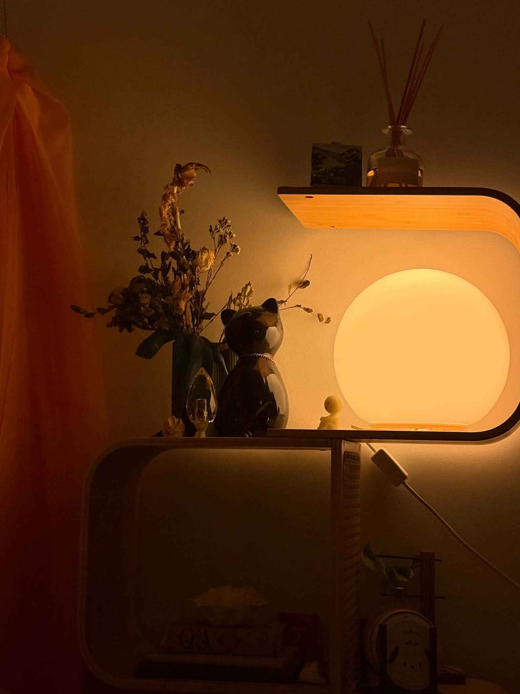
time
aug 2026

( one more
time )
i lost my cat two months ago and it still weighs on me. i made him a little shrine, and it helped. it made me feel connected to him in a way that was lost when he passed. may we meet again, Peanut.
have enough courage to trust love one more time and always one more time.
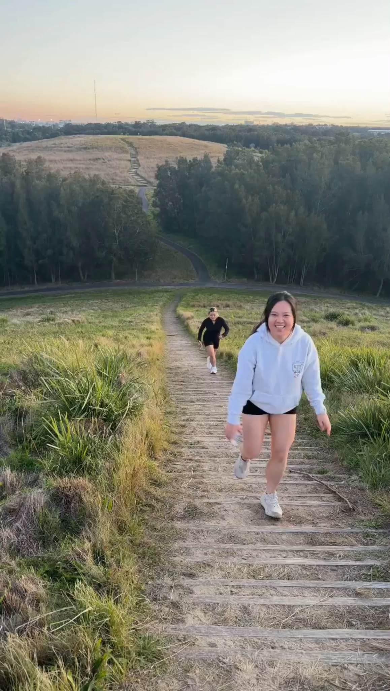
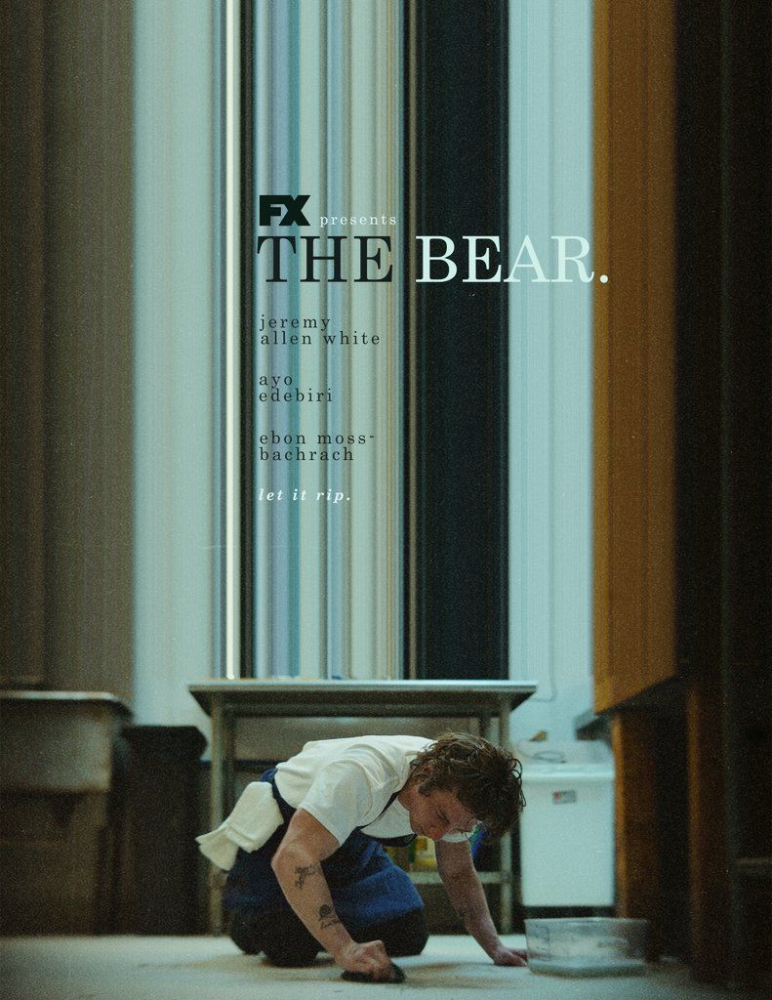
a show i started because of you
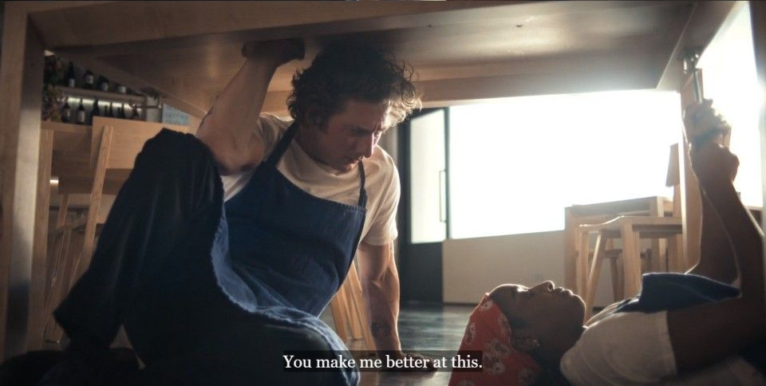
episode - forks )
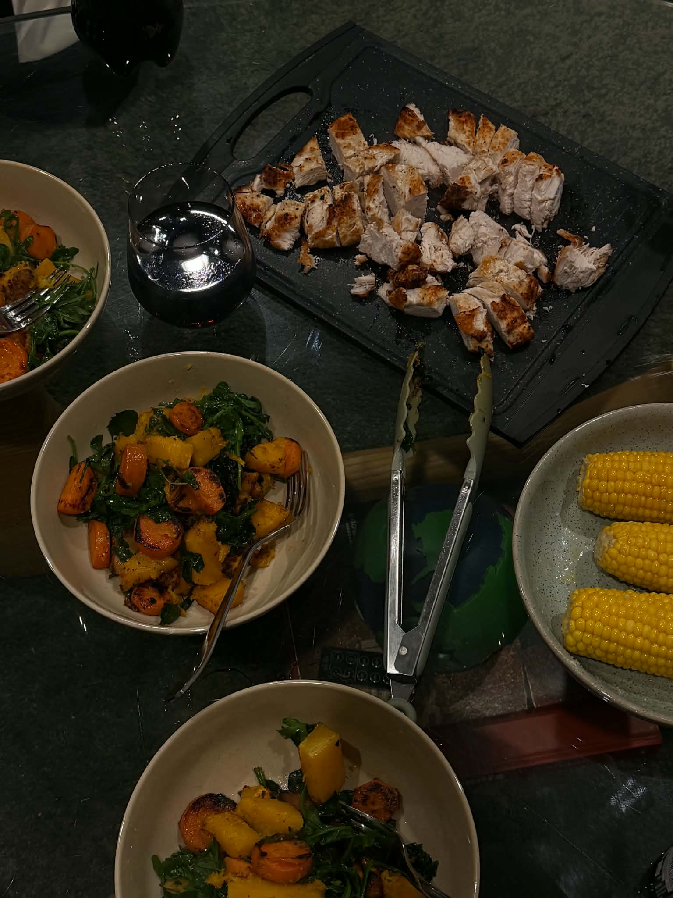
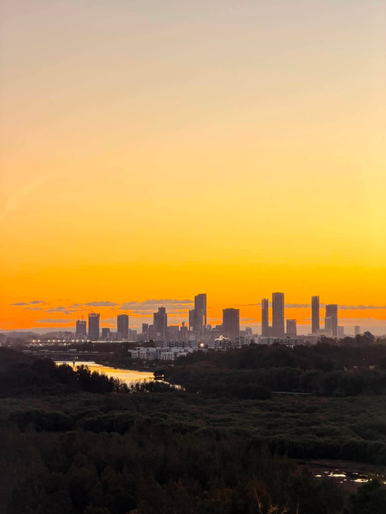
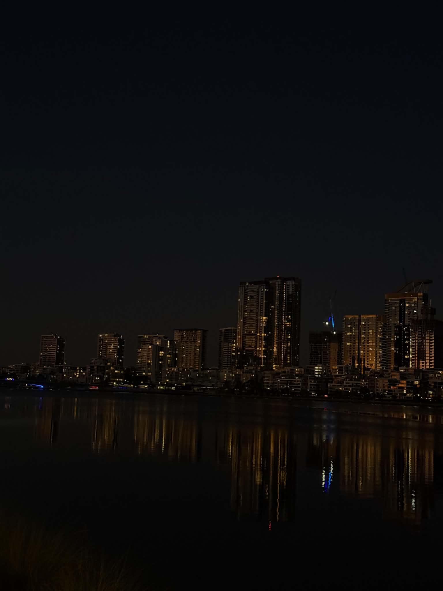
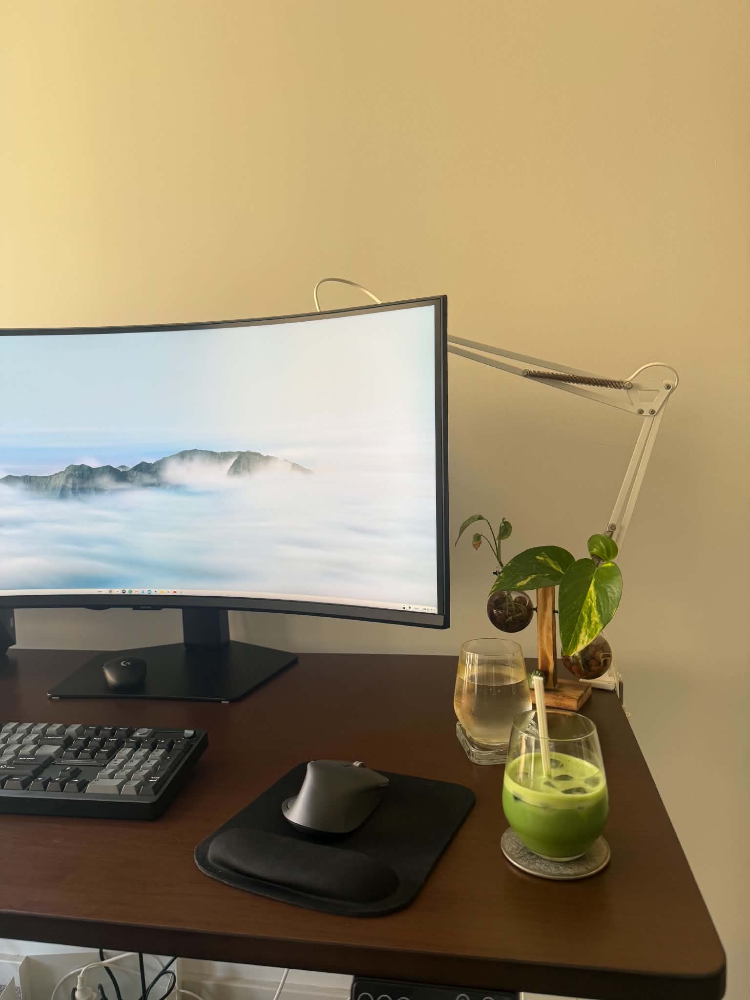
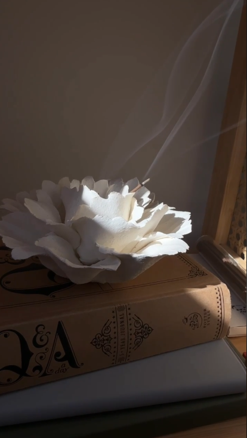
somehow you're an adult with a whole new friend group and a string of ex lovers and plans every night of the week and strong feelings about the different neighborhoods of your city and bills to pay and new lines forming on your face.
do you remember being 14, alone in your room? sad music. you made it out. or you're making it out. it's different now, but it's better.
if i could have done it all again, i would have loved you better. but i could not have loved you more.
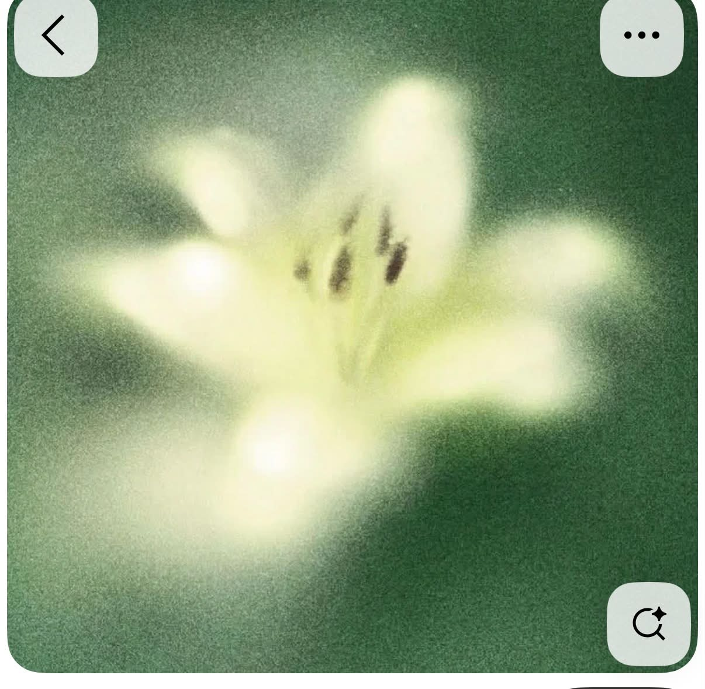
actually looks like.
printed on cotton stock, deckle edge
made in sydney · august 2026
edition of one.
( a friend moving )
moving

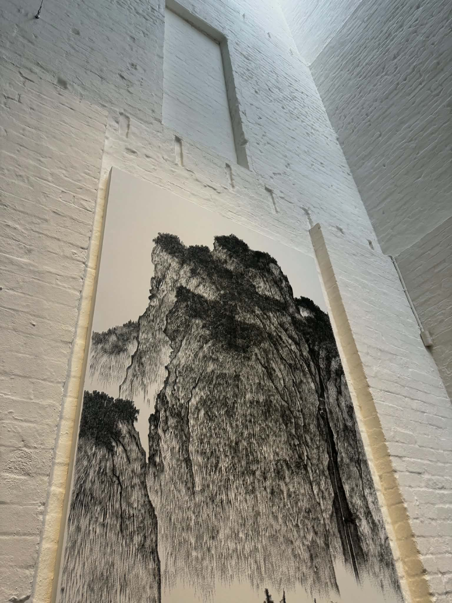


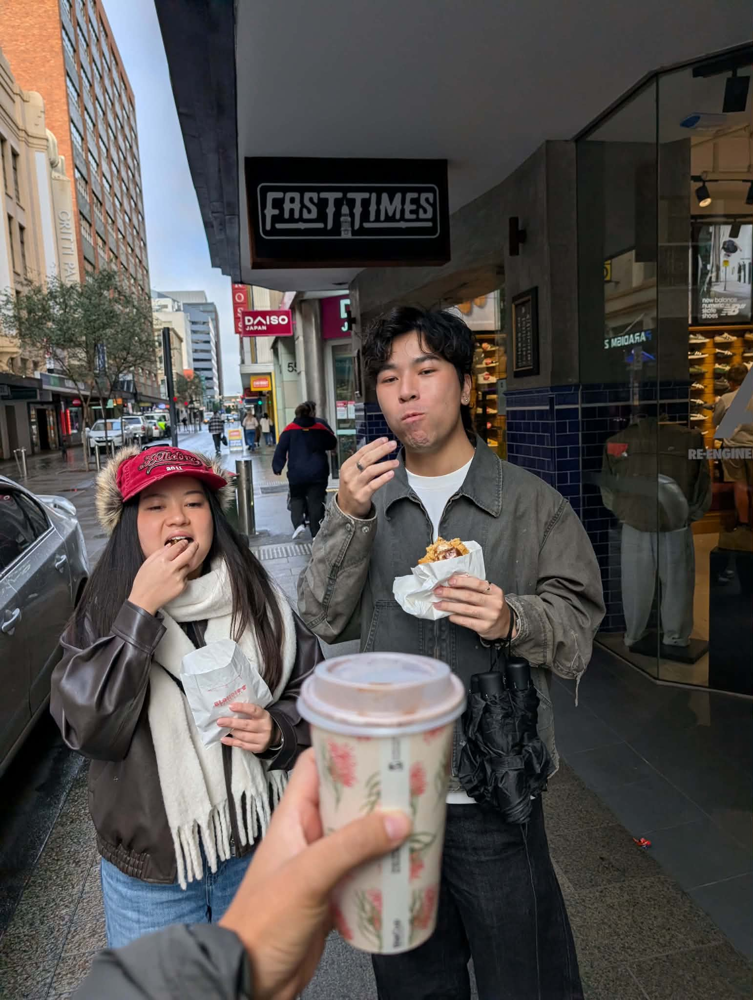

rockdale
mascot
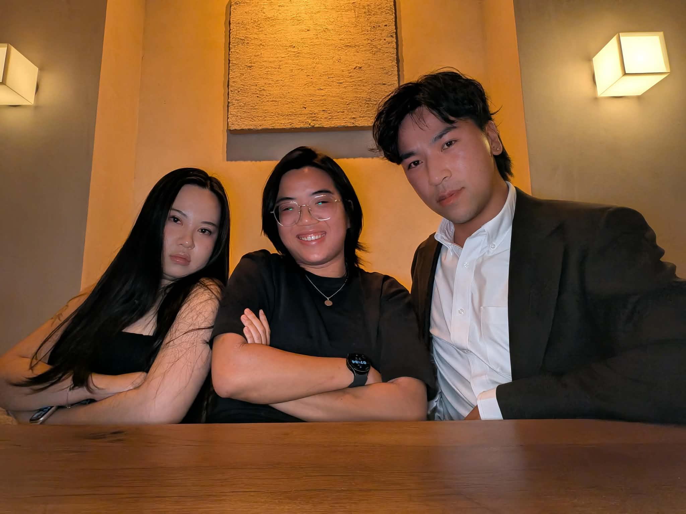

birthday here)
chapters
wine, art, and celebrations)
( about )
personal zines, with no rhyme or reason. each volume is a record of a stretch of life: photographs, borrowed lines, and whatever i was thinking about at the time.
some volumes are built around something big. others, something smaller. mini volumes hang off as an aside, a small window into my world.
this is fragile. please take care <3